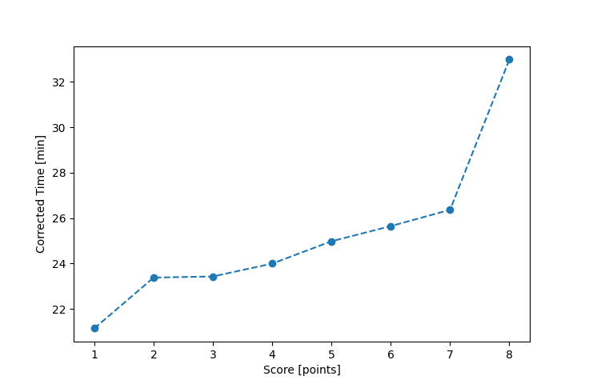

| Wind: | 2-3 (BFT) |
|---|---|
| RC: | Nedra_FMike_F |
| Date: | May 31, 2020 |
| Notes: | M2 Starboard |
| Rank / Score | Name | Boat | Input Time [mm:ss] | Input Offset [mm:ss] | Race Time [mm:ss] | Race Time [s] | Handicap | Corrected Time [s] | Corrected Time [mm:ss] |
|---|---|---|---|---|---|---|---|---|---|
| 1.0 | Ron_F | F5 | 20:26 | 00:00 | 20:26 | 1226 | 0.96600 | 1269 | 21:09 |
| 2.0 | Bill_P | SF | 23:29 | 00:00 | 23:29 | 1409 | 1.00400 | 1403 | 23:23 |
| 3.0 | Rod_H | LASEM | 22:48 | 00:00 | 22:48 | 1368 | 0.97300 | 1406 | 23:26 |
| 4.0 | Barry_O | HLR14 | 26:48 | 00:00 | 26:48 | 1608 | 1.11700 | 1440 | 24:00 |
| 5.0 | Matt_L | DLPSR | 27:08 | 00:00 | 27:08 | 1628 | 1.08600 | 1499 | 24:59 |
| 6.0 | Nick_H | SF | 25:45 | 00:00 | 25:45 | 1545 | 1.00400 | 1539 | 25:39 |
| 7.0 | Ian_O | SF | 26:28 | 00:00 | 26:28 | 1588 | 1.00400 | 1582 | 26:22 |
| 8.0 | Jim_S | SF | 33:07 | 00:00 | 33:07 | 1987 | 1.00400 | 1979 | 32:59 |

Application Notes:
All race results are unofficial
View source code at https://github.com/cessnao3/portsmouthracecalc/